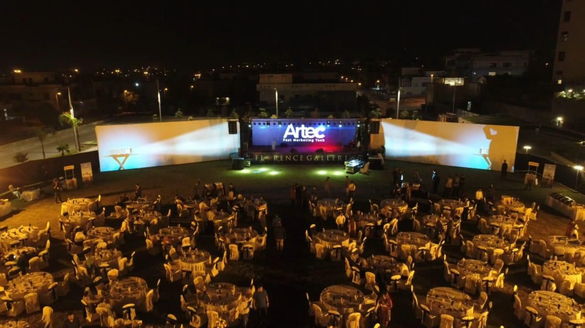

Flicker and strobe safety in projection mapping content
How to keep projection mapping content comfortable for large crowds: flash limits, strobe effects, red and contrast, motion, and a pre-show checklist.

A building-scale image fills far more of a viewer's field of vision than any screen. That is the appeal of projection mapping, and it is also why rapid flashing, strobing and aggressive flicker deserve more care here than in ordinary video. A sequence that looks punchy on a laptop can be uncomfortable for a crowd standing close to a large facade, and for a small number of people it can be genuinely unsafe. At AKS we treat flash and flicker as a design constraint from the storyboard stage, not as a check performed at the end. This note explains the risks in plain terms, where they come from in mapped content, and the habits we use to keep a show exciting without putting the audience at risk.
Why large surfaces raise the stakes
Photosensitive reactions are linked to rapid changes in brightness, to certain patterns, and to the proportion of the viewer's vision that is affected. A small bright flash on a phone is one thing. The same change across an entire facade, seen from fifty metres away in the dark, is another. In a night show the audience's eyes are adapted to low light, so bright transitions feel stronger than they do in a lit review room. The audience also cannot look away easily, because the building is the show.
We are not medical professionals, and we do not give medical advice. What we do is follow the conservative guidance that broadcasters and accessibility standards already publish, and apply it to a much larger canvas. If a show has an unusual requirement, or if the client has a duty of care policy, we recommend that their safety adviser sees the content before sign-off.
The rules of thumb we design around
Several widely used guidelines, including web accessibility guidance, set the general threshold at no more than three flashes in any one-second period. Broadcast standards go further, with formal analysis tools that test footage for harmful flash and for patterns. We use the three-per-second figure as a hard ceiling for any flash that covers a meaningful part of the image, and we aim to stay well below it. We also avoid long runs of flashes even when each second is technically within the limit, because a sustained rhythm is tiring even for viewers with no sensitivity at all.
Saturated red deserves particular caution. Rapid transitions to and from strong red are treated as a higher risk than similar changes in other colours, so we avoid fast red flashing altogether. Alternating bold patterns, such as tight stripes or checkerboards that flip on and off, are the other classic problem. They matter in mapped work because architecture is full of repeating lines: windows, fins and columns. When a design pulses across those lines in time with a beat, it can create exactly the sort of high-contrast repeating pattern that guidelines warn about.
Where flicker hides in mapped content
Intentional strobing is easy to spot in a storyboard. The harder cases are the accidental ones, and they usually come from four places.
- Beat-driven transitions. Cuts on every beat of a fast track can add up to many flashes per second between white and dark. A track at a high tempo with a cut on each beat needs to be checked, not assumed safe.
- Light sweeps across facade details. A bright band moving quickly over a row of windows turns each window into a flash, and the eye counts every one.
- Glitch and noise effects. Designers like digital distortion, but rapid noise or frame-by-frame flicker can read as strobing at large scale.
- Playback problems. Dropped frames, a mismatch between the content frame rate and the output rate, or unstable synchronisation between projectors can create a visible flicker that was never in the design. We cover frame rate choices in our note on video codecs and frame rates, and the show-control side in our note on timecode.
Overlap zones between projectors are another quiet source. If blending is poorly matched, the seam can shimmer when the image moves, which reads as unwanted flicker. Careful setup, as described in our note on edge blending, removes that variable.
How to keep the energy without the strobe
Safe does not mean timid. Most of the impact of a flash can be kept by changing how it is built. Instead of a hard cut from black to white, we ramp brightness up over several frames and let it decay more slowly. Instead of flooding the whole canvas, we confine a bright burst to one architectural element, so that the change is large in intensity but smaller in area. Instead of repeating a pulse many times, we use one strong moment and then give the audience a visual rest.
We also use contrast within limits. A scene that moves between very dark and very bright every second is demanding to watch. A scene that shifts between mid-tones with controlled highlights holds attention more comfortably and also renders better on a real surface, because projected black is never truly black. Our note on colour and contrast covers how the wall and ambient light shape what the audience sees.
Motion deserves the same respect. Fast, wide movement across the whole building, such as rapid zooms or spinning patterns, can cause discomfort or disorientation for some viewers even without any flashing. We keep large-scale motion smooth and give the eye a stable reference, usually a part of the facade that stays calm while another part moves.
Testing before the audience sees it
There are three levels of checking, and we use more than one. The first is a design review of the storyboard, where the whole team looks for planned strobes, fast red and repeating patterns. The second is a frame-by-frame review of the rendered content, looking at the brightness curve of each scene, especially at music hits. Automated analysis tools exist for this and are used in broadcast, and where a client or venue requires formal evidence, they are worth the cost. The third is a full-scale check on site, with the real surface and real playback chain, because the final look depends on projector brightness and the building itself. Our note on projector brightness explains why the same file behaves differently on a different wall.
The on-site check is also the moment to confirm the playback chain is stable, so that the only flicker in the show is the flicker the designers chose. This belongs in the show-week schedule as an explicit item, not as something that happens while people are watching the rehearsal for other reasons.
Content risk at a glance
| Content element | Risk | Safer approach |
|---|---|---|
| Full-canvas white flash | High | Ramp the brightness, limit to one element, use once |
| Fast red flashing | High | Avoid; hold red or fade it |
| Tight stripes or checks that flip | High | Use larger shapes and slower change |
| Beat-synced cuts at high tempo | Moderate | Cut on every second or fourth beat |
| Light sweep across windows | Moderate | Slow the sweep or soften the edge |
| Glitch and noise effects | Moderate | Short duration, low contrast |
| Playback frame drops | Variable | Test the full chain on site |
A flicker and strobe checklist
- The brief states whether the client has an audience safety or accessibility policy.
- The storyboard marks every planned flash, strobe and fast pattern.
- No flash covering a large part of the canvas exceeds three per second, and the design stays well below it.
- Fast red flashing is removed from the design.
- Repeating high-contrast patterns are checked against the facade's own repeating features.
- Beat-synced transitions are reviewed at the final tempo of the soundtrack.
- Rendered scenes are reviewed frame by frame at the loudest and brightest moments.
- Formal flash analysis is run where the client or venue requires it.
- The playback chain, projector sync and blends are tested on site for unintended flicker.
- Crowd information, such as signage, is considered if the show contains intense sequences.
The best shows we have seen hold an audience through variety, scale and pacing, not through repeated flashing. If you are planning a show and want the content reviewed for comfort and safety before animation begins, send us the site, the date and any policy you must meet through the contact section, and we will build it into the plan.
Planning a show for a large crowd?
Send AKS Creative Studio your site, date and audience policy and we will build safe flash limits into the design.
Start a conversation ↗